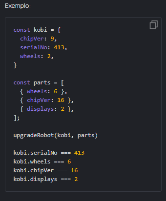
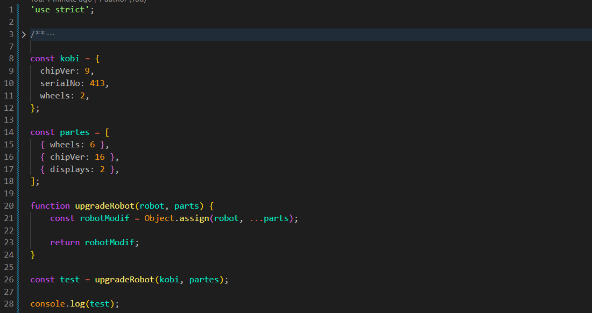

Nosso robô Kobi participará da competição intergaláctica e outras fábricas de robôs decidiram nos ajudar a proteger a honra da galáxia! Elas nos fornecerão seus melhores detalhes. Vamos instalar novas peças em nosso robô Kobi?
Crie uma função upgradeRobot que receba um objeto robot e um array de objetos com peças parts. Você deve atribuí-las ao robô usando o método Object.assign().

Resultado
JS:

Conclusão: Inicialmente, a linha const robotModif = Object.assign(robot, ...parts); foi escrita de forma incorreta, pois havia um pequeno detalhe: foi utilizado {} como primeiro argumento, ficando const robotModif = Object.assign({}, robot, ...parts);. Quando passamos um objeto vazio ({}) como primeiro argumento, o Object.assign() cria um novo objeto com as propriedades copiadas e aplica as modificações nele, preservando o objeto original. Neste exercício, porém, era necessário modificar o próprio objeto robot, por isso o primeiro argumento deve ser robot, e não {}.
O operador spread (...parts) foi utilizado para espalhar os objetos contidos no array parts, fazendo com que cada objeto fosse passado individualmente como argumento para o Object.assign().